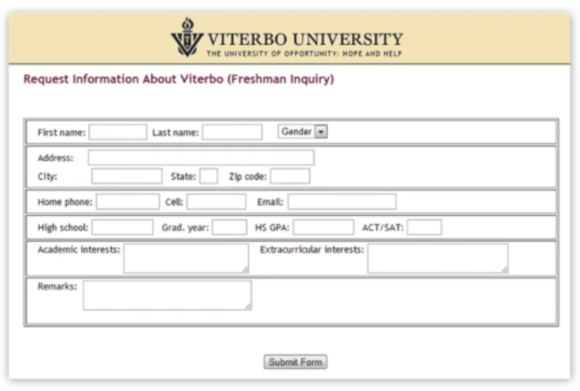
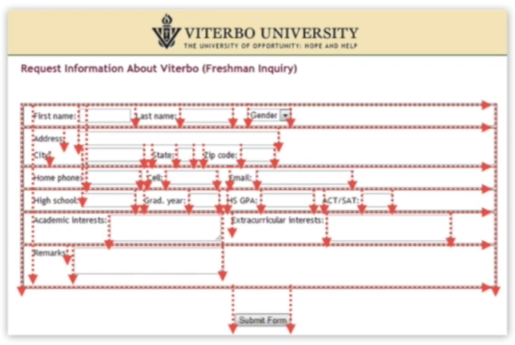
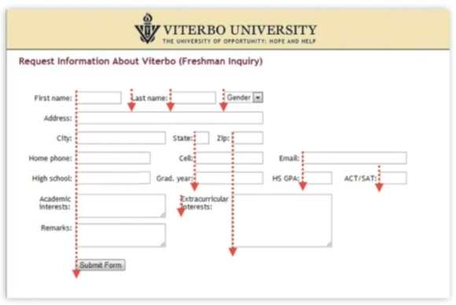
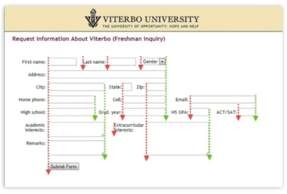
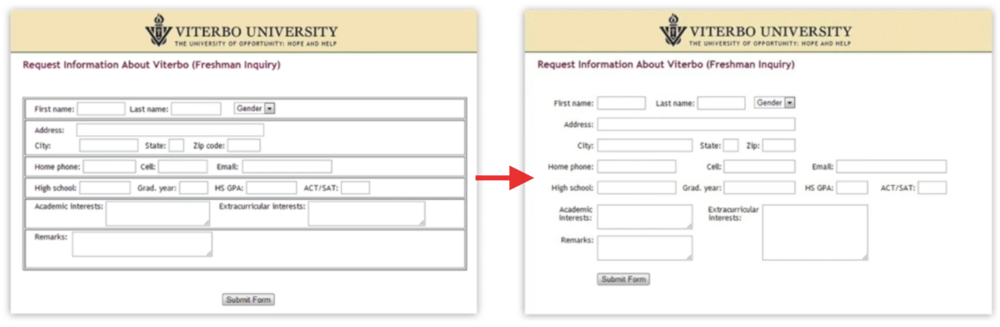

Jump to a section
18 · Alignment - Leading the Eye Across the Screen
Refined 15 October 2026 from the supplied Joe Natoli course notes. Original wording and captures remain preserved.
Core principle
Consistent alignment reduces unnecessary visual paths and helps associate labels with fields.
Application to game tools
Use shared label edges, logical field order and host layout managers; test the smallest supported window.
Assessment and qualification
Do not repeat unquantified dramatic performance gains. Borders can be necessary to identify controls; removing every boundary is not the goal.
Try it
Which edge can align without implying an incorrect relationship?
Source: 18 Alignment - Leading the Eye Across the Screen.md
Study detail and teaching translation
Alignment creates shared reference lines. Consistent edges help associate labels, fields, rows and groups without adding a rule around every region.
Simplify a screen into shapes to inspect alignment independently of its detailed content. Restore text afterward to check actual readability and meaning.
Teaching adaptation: let layout managers express relationships, then test window resizing. Keep borders where they communicate a necessary control boundary or state.
Original captures




